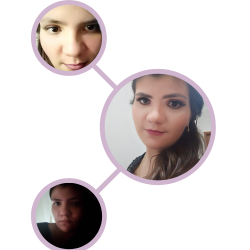

Oi! Eu sou Letícia.
Olá! Nasci, cresci e ainda moro em São Paulo. Sim, ainda. Pois ainda sonho em poder morar em Nova York ou talvez em Londres, pensando bem acho que quero ir para Sydney, enfim, não importa por agora.
Me formei em Administração de Banco de Dados, trabalho atualmente com Analista de banco em uma empresa chamada Trend2B. Estou lá já faz algum tempinho.
Eu adoro o que eu faço realmente adoro, mas não posso deixar de perceber que eu gosto de poder saber mais do que sei hoje e, por isso, decidi começar um curso de Full-Stack Java, para que eu possa, além de ser DBA, me tornar uma Programadora.
Mas isso não significa que não continuarei sendo uma DBA, por quê não ser os dois?
